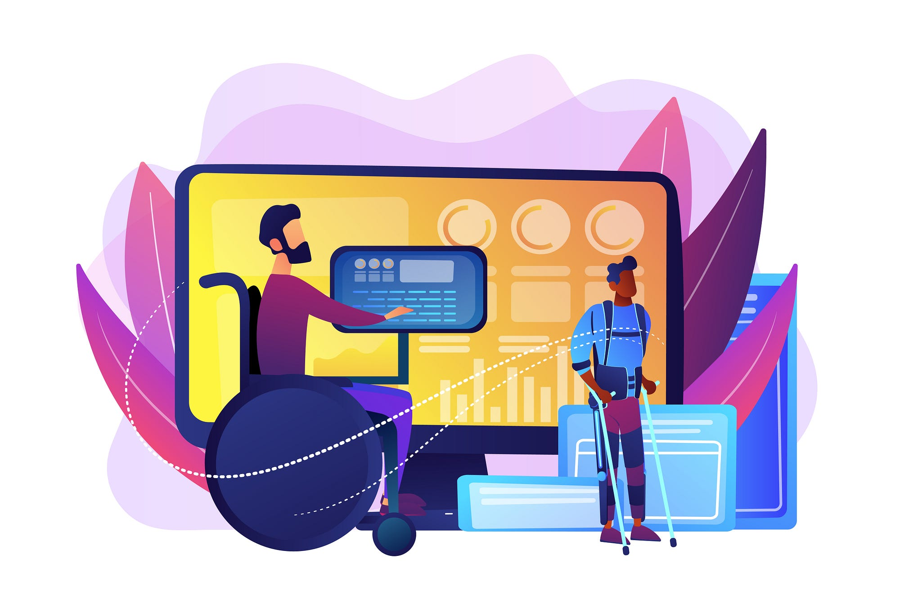

Tecnologias Assistivas

O que são tecnologias assistivas?
Tecnologia assistiva é um termo utilizado para identificar recursos e serviços voltados às pessoas com deficiência, visando proporcionar a elas, autonomia, independência, qualidade de vida e inclusão social. Atuando como auxiliador que amplia as habilidades das pessoas com deficiência. Podemos encontrar tanto na forma de software e hardware, também em serviços de medicina, educação e até design.
O que são práticas NVDA?
WEBSITES
• Incluir em todas as imagens, mapas, gráficos etc. da página um texto alternativo, caso contrário o leitor não irá identificá-la;
• Seguir um padrão lógico para organizar os elementos da página (DOM). Se a sequência estiver errada o leitor de tela pode pular uma parte ou apresentá-la de forma indesejada;
• Definir na estrutura HTML o idioma da página. Assim o leitor de tela consegue entregar a pronúncia correta;
• Construir uma estrutura de subtítulos claros e descritos de forma lógica;
O que são práticas NVDA para sistemas operacionais?
SISTEMAS OPERACIONAIS
• Internacionalização (tradução para vários idiomas) para possibilitar o acesso de todos a essa tecnologia;
• Suporte para sintetizador de voz em vários idiomas;
• Teclas de comando e atalhos para o NVDA para facilitar o manuseamento;
O que é a acessibilidade na web?
Acessibilidade web se refere a criação de um site que seja acessível para todas as pessoas, especialmente usuários com deficiências para auxiliá-los a chegar em seus conteúdos e compreendê-los com autonomia. Incentiva-se com esse modelo o uso de design inclusivo, tecnologias integradas e uso de softwares especializados para fornecer uma melhor experiência para seus usuários.
O que são os padrões W3C?
Os Padrões Web são recomendações do W3C (World Wide Web Consortium), as quais são destinadas a orientar os desenvolvedores para o uso de boas práticas que tornam a web acessível e amigável a todos.
O que é web semântica?
Web Semântica é um movimento colaborativo para organizar a informação de forma legível para computadores e máquinas através de padrões de formatação de dados como o RDF (Resource Description Framework).
A ideia é basicamente atribuir significado ao conteúdo na internet, não sendo mais necessário buscar por informações de forma isolada ou por palavras-chaves, mas sim de forma em que a web possa construir uma resposta mais elaborada a partir de diversas relações.
Não se trata de uma inteligência artificial, mas sim um sistema onde o computador possa ler um bloco de informação, atribuir uma etiqueta de significado, e a partir de inferências com outros blocos gerar um conhecimento maior. Na prática podemos dizer ao computador que, por exemplo, o termo “Peru” é o nome de um país e não uma espécie de animal, desassociando este de erros com palavras-chaves.
Para a implantação de sistemas semânticos, da forma como atualmente está sendo feito, podemos ter dois tipos de abordagem: Bottom Up e Top Down. Na primeira abordagem deve-se inserir Tags nos textos e dados. Isso faria com que fosse necessário um grande esforço para que as informações disponíveis fossem adaptadas a este novo conceito. A abordagem Top Down também necessita de um grande esforço, pois, nesse conceito, faz-se necessário processar os dados já existentes e ainda criar as conexões e estabelecer o significado entre eles.
Muitos outros serviços estão em desenvolvimento ou em fase de testes, mas algo a ser salientado é que a Web Semântica não possui uma forma definitiva de utilização, mas, podemos ter em mente que a sua finalidade é tornar as redes e resultados mais inteligentes.
Alguns recursos podem facilitar esse tipo de implantação. Atualmente a internet dispõe de recursos novos e interessantes que são os widgets e mashups. Widgets são pequenos aplicativos que se utilizam de API’s de serviços e podem ser incluídos em sites e facilitar a vida dos internautas. Um mashup é a união de dois ou mais aplicativos, ou seja, quando se combinam esses recursos passamos a ter um mashup. Este último é visto como sendo um forte mecanismo de apoio a web semântica.
Como aplicar a web semântica?
A implementação de recursos semânticos ainda não obedece a uma estrutura definida. Como não se sabe o que o futuro reserva ainda não se sabe qual será a abordagem utilizada para Web Semântica, visto que, alguns especialistas cogitam uma adaptação de recursos existentes, como por exemplo, utilização de Tags em documentos HTML, em contra partida, outros especialistas alegam a necessita de uma nova tecnologia que começaria do básico, mas é importante saber que uma abordagem definitiva ainda não foi definida.
Referências
http://cimurc.ba.ipmbrasil.org.br/padroes-web#:~:text=O%20que%20s%C3%A3o%3F,a%20web%20acess%C3%ADvel%20para%20todos
https://tecnoblog.net/responde/o-que-e-o-w3c-world-wide-web-consortium/
https://www.handtalk.me/br/blog/tecnologias-assistivas/
https://professor.escoladigital.pr.gov.br/tecnologias_assistivas#:~:text=Tecnologia%20Assistiva%20(TA)%20%C3%A9%20um,de%20vida%20e%20inclus%C3%A3o%20social
https://www.presidentekennedy.es.gov.br/pagina/ler/1077/acessibilidade-leitor-de-tela-nvda#:~:text=NVDA%20%C3%A9%20uma%20plataforma%20para,desktop%20de%20acesso%20n%C3%A3o%20visual
https://www.devmedia.com.br/introducao-a-web-semantica/26181
https://www.organicadigital.com/blog/o-que-e-web-semantica/
https://www.handtalk.me/br/blog/acessibilidade-na-web/
https://www.hostinger.com.br/tutoriais/acessibilidade-web